Conception - Interrogation d'une base de données
Requête 3 Chiffre d'affaire généré (montant total des ventes) annuel pour les catégories desserts ou boissons.
Réflexion en lien avec la santé
| Libellé des étapes | Code SQL | Resultat |
|---|---|---|
| 1) On affiche le CA de 2020 des boissons ou des desserts |
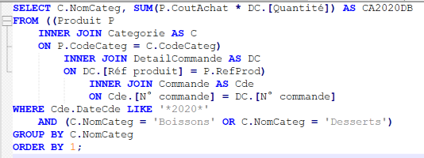 |
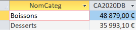 |
| 2) On affiche le CA de 2021 des boissons ou des desserts |
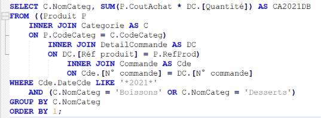 |
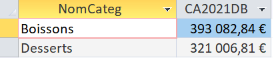 |
| 3) On affiche le CA de 2022 des boissons ou des desserts |
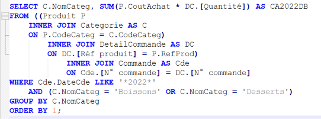 |
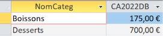 |
| 4) Le chiffre d'affaire total (de 2020 à 2022) des boissons ou des desserts |
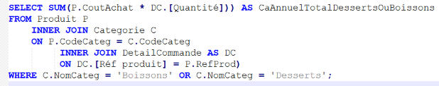 |
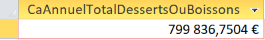 |
Proposition d'indicateur pertinent pour KDou : Combien de produits KDou présente en stock et qui ne sont pas industriels (=produits dans des usines) dont la provenance est naturelle.
SELECT COUNT(P.NomProd)AS NbProduitsNaturels
FROM Produit AS P
INNER JOIN Categorie AS C
ON P.CodeCateg = C.CodeCateg
WHERE P.UnitStock IS NOT NULL
AND C.NomCateg IN ('Viandes', 'Poissons et fruits de mer', 'Produits secs');
Cette requête a pour but de compter combien de produits éco responsable KDou a en stock. On remarquera que le nombre de produits issu du naturel sont moindre que celui issu des industries. Cela peut aider KDou a favoriser l'achat de produits plus éco-friendly (qui respecte l'environnement) à l'avenir.
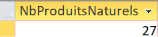
f. Quels sont les produits conditionnés dans du carton ou dans du verre ?
Je fais attention au nom des attributs sur la feuille Access qui n'est pas forcément référencié
en tant que tel dans les relations. Le champ 'Quantité Par Unité' dans la table Produit laisse voir
dans quels type d'emballages les produits sont conditionnés. Il n'y a pas de doublons possible pour cette requête.
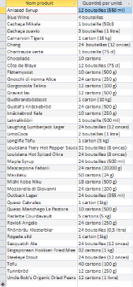
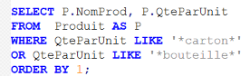